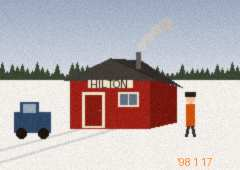
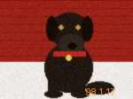

Hello and welcome! My name is Gary Lundquist and I live outside of Duluth, Minnesota. I have been a rural mail carrier
for 19 years (Route 2, if your from around here you know me!). My daughter Kristi set me up with this page over
Christmas break so here I am on the "Information Superhighway". She says everybody has a home page now so I figured
I better get one too before I'm the last guy.
This page is mostly about ice fishing because that's what I do from about December to March. If you don't like
fishing you probably won't like this page, sorry! But stay and look around anyway.
| ON THIS PAGE |
| ABOUT THE WALLEYE HILTON |
I built the Walleye Hilton myself in the fall of 1996 in my garage. It is 8 x 12 feet and made of 2x4's and plywood with tin on the roof. It sits on runners made from old landscape timbers and I pull it out with the truck. My wife Bonnie picked the color (barn red) and named it the Hilton because she said it was nicer inside then our first apartment. She may be right about that.
Inside it has:
TIP: If you are building your own house, put the holes along one side not in the middle. You will thank me later.
| MY 1997-98 FISHING LOG |
I keep this in a notebook in the fish house and Kristi typed it up for me.
| Date | Lake | Ice | Caught | Notes |
|---|---|---|---|---|
| Dec 20 | Vermilion | 11" | 2 walleye, 1 perch | First day out! Pulled the house out. |
| Dec 27 | Vermilion | 13" | 0 | Skunked. Brother in law came. |
| Jan 3 | Vermilion | 16" | 4 walleye | Biggest 22 1/2". Jig and minnow. |
| Jan 10 | Island Lake | 15" | 11 crappies | With Don P. Good fish fry. |
| Jan 17 | Vermilion | 18" | 3 walleye, 1 northern | -24 that morning. Truck started! |
| Jan 24 | Vermilion | 19" | 1 walleye | Slow. Played cribbage mostly. |
| Jan 31 | Vermilion | 20" | 5 walleye | Best day of the year so far!! |
Biggest fish so far: 27 inch northern pike, Jan. 17. Let it go. (Honest.)
| MY FISHING PARTNER DUKE |
 |
This is Duke. He is a black lab and he is 7 years old. He comes out to the fish house every time and sleeps on the bunk, so I don't get to use it. He has never caught a fish but he has eaten a few minnows out of the bucket when I wasn't looking. Good dog. |
| COOL LINKS |
Questions about fish houses? E-mail me at walleyegary@juno.com
(I am a mailman so I will answer, ha ha)
You are visitor number
since Jan. 1, 1998
Last updated February 2, 1998 (Groundhog Day - he saw his shadow, 6 more weeks of fishing!)
This page best viewed with Netscape Navigator at 800x600.